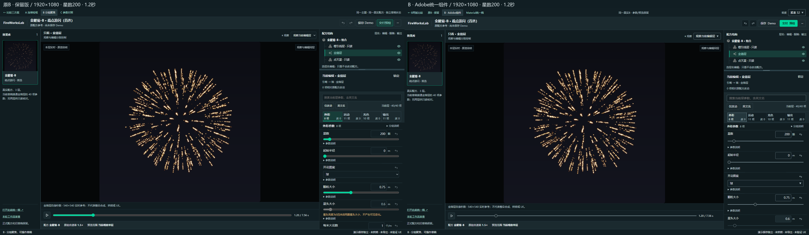

原B · 保留版
原页面与原存档不变。参数、交互与真实预览继续保留，作为本轮对照基线。
你当前更喜欢Material。本页新增Adobe取向组件接入B的试验稿，保留四个任务组、40项真实代表参数、真实三层上下文和单层原核预览，供你在完整调参流程中比较。
原页面与原存档不变。参数、交互与真实预览继续保留，作为本轮对照基线。
使用上一轮Spectrum取向的共享样式，适配B的真实控件。默认紧凑32，也可切常规40；两档均保留14px数值与13px标签。
改星数 → 切运动/光色 → 搜索和仅改动 → 撤销/保存 → 改观察层 → 交付核对。两版独立保存，不会自动同步参数；同一初始配方可直接比较画面与密度。
新稿保留B的输入含义：滑杆是常用区间，精确输入不被静默截断；错误值保留，画布继续显示最近有效参数。金锦层可编辑，另外两层是真实只读参考。

只接适用的统一控件，不增加无业务用途的单选或开关。真实预览仍是当前观察单层、内部540×540的原核参考；整朵参考为静态。未接真实烘焙、素材包输出、生产保存或UE。